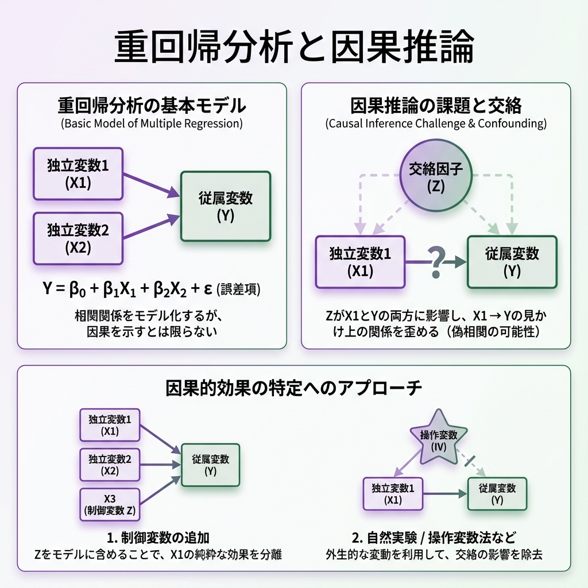
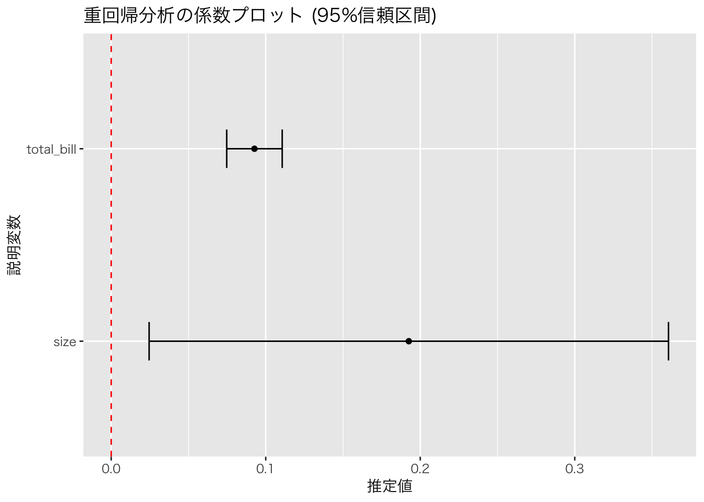
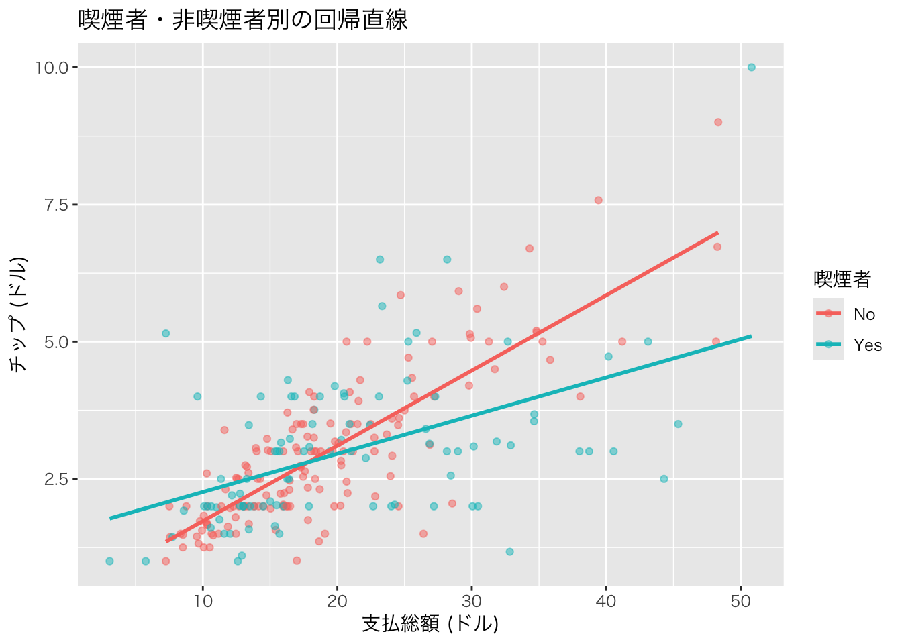

library(tidyverse)
url <- "https://raw.githubusercontent.com/mwaskom/seaborn-data/master/tips.csv"
tips <- read_csv(url)
model2 <- lm(tip ~ total_bill + size, data = tips)
summary(model2)
#>
#> Call:
#> lm(formula = tip ~ total_bill + size, data = tips)
#>
#> Residuals:
#> Min 1Q Median 3Q Max
#> -2.9279 -0.5547 -0.0852 0.5095 4.0425
#>
#> Coefficients:
#> Estimate Std. Error t value Pr(>|t|)
#> (Intercept) 0.668945 0.193609 3.455 0.00065 ***
#> total_bill 0.092713 0.009115 10.172 < 2e-16 ***
#> size 0.192598 0.085315 2.258 0.02487 *
#> ---
#> Signif. codes: 0 '***' 0.001 '**' 0.01 '*' 0.05 '.' 0.1 ' ' 1
#>
#> Residual standard error: 1.014 on 241 degrees of freedom
#> Multiple R-squared: 0.4679, Adjusted R-squared: 0.4635
#> F-statistic: 105.9 on 2 and 241 DF, p-value: < 2.2e-16第12回 重回帰分析と因果推論

今回の目標
- 複数の説明変数を使う重回帰分析を理解する。
- 回帰分析の結果を「因果関係」として解釈する際の注意点（交絡因子など）を学ぶ。
重回帰分析 (Multiple Regression)
重回帰分析とは
説明変数が2つ以上ある回帰分析を重回帰分析といいます。
\[ y = \beta_0 + \beta_1 x_1 + \beta_2 x_2 + \dots + \beta_k x_k + \epsilon \]
ここで：
- \(y\)：被説明変数（目的変数）
- \(x_1, x_2, \dots, x_k\)：説明変数
- \(\beta_0\)：切片
- \(\beta_1, \beta_2, \dots, \beta_k\)：偏回帰係数
- \(\epsilon\)：誤差項
重回帰分析の最大の強みは、「他の条件を一定としたとき（ceteris paribus）」の影響力を推定できることです。これは経済学において非常に重要な概念です。
基本的な重回帰分析の例
tips データで、チップの額 (tip) を、支払総額 (total_bill) と人数 (size) の両方で説明してみましょう。
結果の解釈:
total_billの係数:0.093- 「人数 (
size) を固定したときに（同じ人数のグループ同士で比べたときに）」、支払総額が1ドル増えると、チップは約0.093ドル増えることを意味します。 - 単回帰のとき（0.105）より少し値が小さくなりました。これは、人数という要因をコントロールしたためです。
- 「人数 (
sizeの係数:0.193- 「支払総額 (
total_bill) を固定したときに（同じ支払額のグループ同士で比べたときに）」、人数が1人増えると、チップは約0.193ドル増えることを意味します。 - p値 (
0.02487) は 0.05 より小さいので、統計的に有意です。つまり、支払額が同じでも、人数が多いほうがチップが多くなる傾向があると言えます。
- 「支払総額 (
単回帰と重回帰の比較
同じデータで単回帰と重回帰を比較してみましょう。
# 単回帰モデル
model_simple <- lm(tip ~ total_bill, data = tips)
# 結果の比較
cat("【単回帰】tip ~ total_bill\n")
#> 【単回帰】tip ~ total_bill
coef(model_simple)
#> (Intercept) total_bill
#> 0.9202696 0.1050245
cat("\n【重回帰】tip ~ total_bill + size\n")
#>
#> 【重回帰】tip ~ total_bill + size
coef(model2)
#> (Intercept) total_bill size
#> 0.66894474 0.09271334 0.19259779total_bill の係数が単回帰では約0.105、重回帰では約0.093となっています。この差は、人数（size）をコントロールすることで生じたものです。
決定係数の比較
cat("単回帰のR²:", summary(model_simple)$r.squared, "\n")
#> 単回帰のR²: 0.4566166
cat("重回帰のR²:", summary(model2)$r.squared, "\n")
#> 重回帰のR²: 0.4678693説明変数を追加することで、モデルの説明力（\(R^2\)）が向上していることがわかります。
係数の可視化 (Coefficient Plot)
重回帰分析の結果（推定値と信頼区間）をグラフにすると、どの変数の影響が大きいか分かりやすくなります。
library(broom)
# モデルの結果を整理されたデータフレームにする {.unnumbered}
tidy_model <- tidy(model2, conf.int = TRUE)
theme_set(theme_gray(base_family = "HiraKakuProN-W3"))
# 切片(Intercept)を除いてプロット {.unnumbered}
tidy_model %>%
filter(term != "(Intercept)") %>%
ggplot(aes(x = estimate, y = term)) +
geom_point() +
geom_errorbarh(aes(xmin = conf.low, xmax = conf.high), height = 0.2) +
geom_vline(xintercept = 0, color = "red", linetype = "dashed") +
labs(title = "重回帰分析の係数プロット (95%信頼区間)", x = "推定値", y = "説明変数")
ダミー変数を使った回帰分析
ダミー変数とは
カテゴリ変数（性別、曜日、地域など）を回帰分析に組み込むために使う0/1の変数です。Rでは、カテゴリ変数（factor型）を説明変数にすると、自動的にダミー変数を作成してくれます。
# 喫煙者かどうかを追加したモデル
model3 <- lm(tip ~ total_bill + size + smoker, data = tips)
summary(model3)
#>
#> Call:
#> lm(formula = tip ~ total_bill + size + smoker, data = tips)
#>
#> Residuals:
#> Min 1Q Median 3Q Max
#> -2.8986 -0.5697 -0.0643 0.5115 4.0630
#>
#> Coefficients:
#> Estimate Std. Error t value Pr(>|t|)
#> (Intercept) 0.709016 0.204881 3.461 0.000638 ***
#> total_bill 0.093888 0.009331 10.062 < 2e-16 ***
#> size 0.180332 0.087803 2.054 0.041077 *
#> smokerYes -0.083433 0.138000 -0.605 0.546028
#> ---
#> Signif. codes: 0 '***' 0.001 '**' 0.01 '*' 0.05 '.' 0.1 ' ' 1
#>
#> Residual standard error: 1.015 on 240 degrees of freedom
#> Multiple R-squared: 0.4687, Adjusted R-squared: 0.462
#> F-statistic: 70.57 on 3 and 240 DF, p-value: < 2.2e-16smokerYes の係数は、非喫煙者（No）を基準としたときの喫煙者（Yes）の効果を表しています。
複数のカテゴリ変数を使う
曜日と時間帯も追加してみましょう。
model4 <- lm(tip ~ total_bill + size + smoker + day + time, data = tips)
summary(model4)
#>
#> Call:
#> lm(formula = tip ~ total_bill + size + smoker + day + time, data = tips)
#>
#> Residuals:
#> Min 1Q Median 3Q Max
#> -2.8551 -0.5733 -0.0863 0.4866 4.1034
#>
#> Coefficients:
#> Estimate Std. Error t value Pr(>|t|)
#> (Intercept) 0.789582 0.346487 2.279 0.0236 *
#> total_bill 0.094277 0.009538 9.884 <2e-16 ***
#> size 0.176374 0.089332 1.974 0.0495 *
#> smokerYes -0.086470 0.146292 -0.591 0.5550
#> daySat -0.125864 0.308524 -0.408 0.6837
#> daySun -0.032578 0.319158 -0.102 0.9188
#> dayThur -0.160946 0.392573 -0.410 0.6822
#> timeLunch 0.068146 0.443723 0.154 0.8781
#> ---
#> Signif. codes: 0 '***' 0.001 '**' 0.01 '*' 0.05 '.' 0.1 ' ' 1
#>
#> Residual standard error: 1.022 on 236 degrees of freedom
#> Multiple R-squared: 0.47, Adjusted R-squared: 0.4542
#> F-statistic: 29.89 on 7 and 236 DF, p-value: < 2.2e-16曜日については、Fri（金曜）が基準カテゴリとなり、他の曜日との差が表示されています。
交互作用項 (Interaction Term)
交互作用とは
ある説明変数の効果が、別の説明変数の値によって変わる場合があります。例えば、「支払総額がチップに与える影響が、喫煙者と非喫煙者で異なる」といった状況です。
これを分析するために、交互作用項を使います。
# 交互作用を含むモデル
model_interaction <- lm(tip ~ total_bill * smoker, data = tips)
summary(model_interaction)
#>
#> Call:
#> lm(formula = tip ~ total_bill * smoker, data = tips)
#>
#> Residuals:
#> Min 1Q Median 3Q Max
#> -2.6789 -0.5238 -0.1205 0.4749 4.8999
#>
#> Coefficients:
#> Estimate Std. Error t value Pr(>|t|)
#> (Intercept) 0.360069 0.202058 1.782 0.076012 .
#> total_bill 0.137156 0.009678 14.172 < 2e-16 ***
#> smokerYes 1.204203 0.312263 3.856 0.000148 ***
#> total_bill:smokerYes -0.067566 0.014189 -4.762 3.32e-06 ***
#> ---
#> Signif. codes: 0 '***' 0.001 '**' 0.01 '*' 0.05 '.' 0.1 ' ' 1
#>
#> Residual standard error: 0.9785 on 240 degrees of freedom
#> Multiple R-squared: 0.506, Adjusted R-squared: 0.4998
#> F-statistic: 81.95 on 3 and 240 DF, p-value: < 2.2e-16結果の見方：
total_bill：非喫煙者における支払総額の効果smokerYes：支払総額が0のときの喫煙者と非喫煙者の差（実質的な意味は薄い）total_bill:smokerYes：交互作用項。喫煙者における支払総額の効果が、非喫煙者と比べてどれだけ異なるか
交互作用の可視化
tips %>%
ggplot(aes(x = total_bill, y = tip, color = smoker)) +
geom_point(alpha = 0.5) +
geom_smooth(method = "lm", se = FALSE) +
labs(
title = "喫煙者・非喫煙者別の回帰直線",
x = "支払総額 (ドル)",
y = "チップ (ドル)",
color = "喫煙者"
)
多重共線性 (Multicollinearity)
多重共線性とは
説明変数同士が強く相関している場合、多重共線性の問題が生じます。これにより：
- 係数の推定が不安定になる
- 標準誤差が大きくなる
- 係数の解釈が困難になる
VIF（分散膨張因子）による診断
多重共線性の程度は、VIF (Variance Inflation Factor) で確認できます。一般的に VIF > 10 の場合、多重共線性が問題となっている可能性があります。
library(car)
vif(model2)
#> total_bill size
#> 1.557586 1.557586VIF が小さい値であれば、多重共線性の問題は深刻ではありません。
相関と因果
相関関係と因果関係の違い
「相関関係がある」ことと「因果関係がある」ことは別です。 例えば、「アイスクリームの売上」と「水難事故の件数」には正の相関がありますが、アイスクリームが事故を引き起こしているわけではありません。 「気温」という第3の変数（交絡因子）が両方に影響しているからです。
交絡因子 (Confounding Variable)
交絡因子とは、原因と結果の両方に影響を与える第3の変数のことです。
気温（交絡因子）
/ \
↓ ↓
アイス売上 → 水難事故（見せかけの相関）この場合、アイスクリームの売上と水難事故の間に直接の因果関係はありませんが、両方とも気温の影響を受けるため、データ上では相関が観察されます。
交絡因子をコントロールする
重回帰分析で交絡因子を説明変数として加えることで、その影響を取り除くことができます。
例えば、「教育年数が賃金に与える影響」を分析する場合：
# シミュレーションデータの作成
set.seed(123)
n <- 200
# 能力（交絡因子）
ability <- rnorm(n, mean = 100, sd = 15)
# 教育年数（能力の影響を受ける）
education <- 12 + 0.05 * ability + rnorm(n, sd = 2)
# 賃金（教育と能力の両方の影響を受ける）
wage <- 20 + 2 * education + 0.3 * ability + rnorm(n, sd = 5)
sim_data <- tibble(wage, education, ability)能力をコントロールしない場合としない場合を比較：
# 能力をコントロールしない単回帰
model_biased <- lm(wage ~ education, data = sim_data)
# 能力をコントロールした重回帰
model_unbiased <- lm(wage ~ education + ability, data = sim_data)
cat("【能力をコントロールしない場合】\n")
#> 【能力をコントロールしない場合】
cat("教育年数の係数:", coef(model_biased)["education"], "\n\n")
#> 教育年数の係数: 2.494524
cat("【能力をコントロールした場合】\n")
#> 【能力をコントロールした場合】
cat("教育年数の係数:", coef(model_unbiased)["education"], "\n")
#> 教育年数の係数: 1.873354真の効果は2ですが、能力をコントロールしないと過大評価されることがわかります。
因果推論の手法
経済学の実証分析では、交絡因子の影響を取り除き、真の因果効果を明らかにするために様々な手法が使われます：
- 重回帰分析：観測可能な交絡因子をコントロール
- 操作変数法 (IV)：交絡因子が観測できない場合に使用
- 差の差法 (DID)：政策介入の効果を推定
- 回帰不連続デザイン (RDD)：閾値を利用した因果推論
- 傾向スコアマッチング：処置群と対照群を比較可能にする
これらの手法は、計量経済学の上級コースで詳しく学ぶことになります。
モデルの比較と選択
調整済み決定係数
複数のモデルを比較する際、単純な \(R^2\) は説明変数を増やすほど大きくなるため、調整済み決定係数 (\(\bar{R}^2\)) を使います。
\[ \bar{R}^2 = 1 - \frac{(1 - R^2)(n - 1)}{n - k - 1} \]
ここで \(n\) は標本サイズ、\(k\) は説明変数の数です。
# 異なるモデルの調整済みR²を比較
models <- list(
"model1: tip ~ total_bill" = model_simple,
"model2: tip ~ total_bill + size" = model2,
"model3: tip ~ total_bill + size + smoker" = model3,
"model4: tip ~ total_bill + size + smoker + day + time" = model4
)
sapply(models, function(m) summary(m)$adj.r.squared)
#> model1: tip ~ total_bill
#> 0.4543712
#> model2: tip ~ total_bill + size
#> 0.4634533
#> model3: tip ~ total_bill + size + smoker
#> 0.4620370
#> model4: tip ~ total_bill + size + smoker + day + time
#> 0.4542383AIC と BIC
AIC (赤池情報量規準) と BIC (ベイズ情報量規準) は、モデルの適合度と複雑さのバランスを評価する指標です。値が小さいほど良いモデルとされます。
# AIC と BIC の比較
tibble(
model = names(models),
AIC = sapply(models, AIC),
BIC = sapply(models, BIC)
)講義のまとめ
この半期の講義では、以下のことを学びました。
- RとRStudioの基本操作
- データの可視化と要約
- 確率と分布の基礎
- 統計的推測（推定と検定）
- 回帰分析による関係性の分析
これらはデータ分析の入り口に過ぎませんが、経済学の学習や卒業論文、そして社会に出てからのデータ活用において強力な武器となるはずです。
最終課題
自分の興味のあるデータセットを見つけて（Rに組み込まれているものでも、Web上のオープンデータでも可）、以下の分析を行ってください。
- データの概要を説明する。
- ヒストグラムや散布図で可視化する。
- 関心のある2変数について回帰分析を行い、結果を解釈する。
参考：利用可能なデータセット
Rには多くのデータセットが組み込まれています：
# 利用可能なデータセットの一覧
data()
# 例：mtcars（自動車データ）
head(mtcars)
# 例：iris（アヤメのデータ）
head(iris)Web上のオープンデータの例：
- e-Stat（日本の政府統計）: https://www.e-stat.go.jp/
- World Bank Open Data: https://data.worldbank.org/
- Kaggle Datasets: https://www.kaggle.com/datasets
練習問題
tipsデータを使って、チップ率（tip / total_bill）を被説明変数とした重回帰分析を行い、どの要因がチップ率に影響を与えるか調べてください。mtcarsデータを使って、燃費（mpg）を被説明変数とした重回帰分析を行い、結果を解釈してください。交互作用項を含むモデルを作成し、通常のモデルと比較してください。